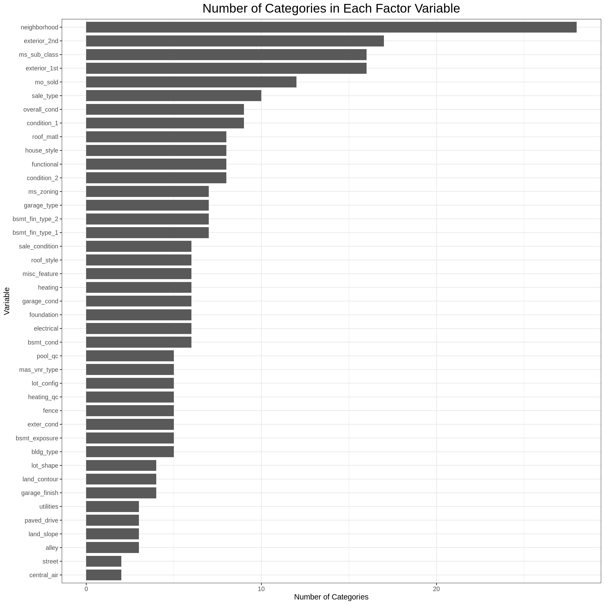
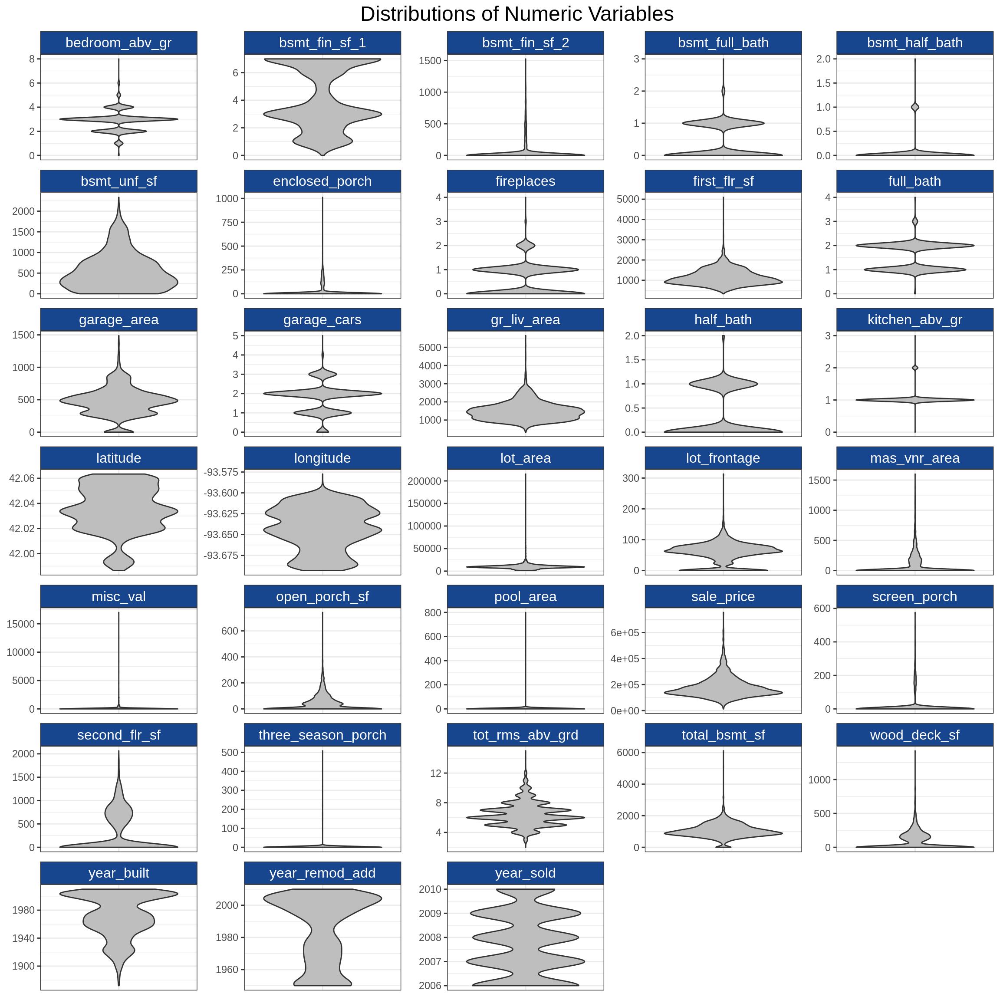
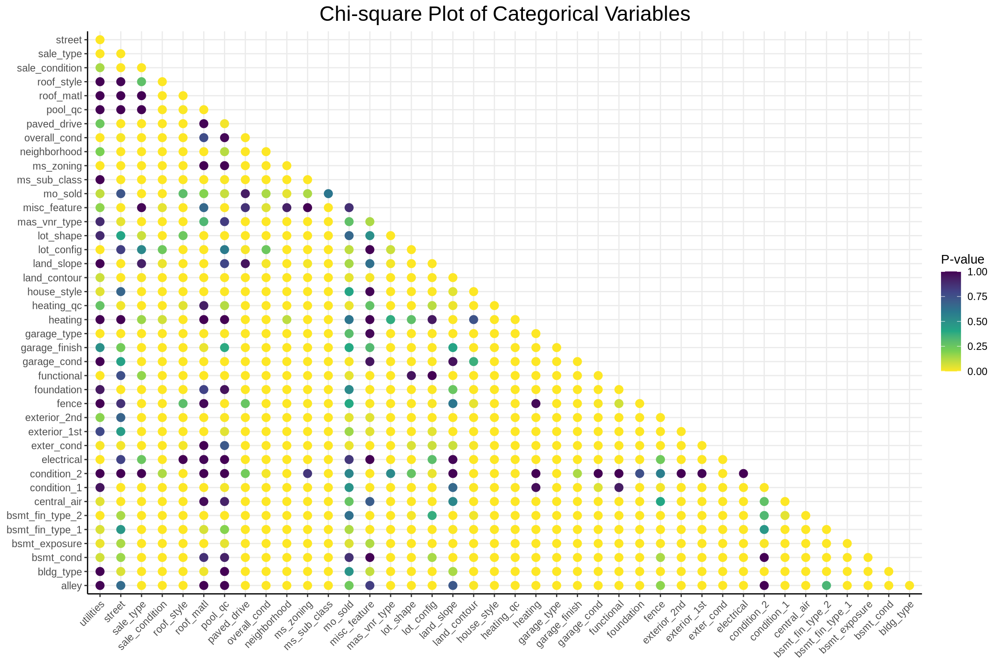
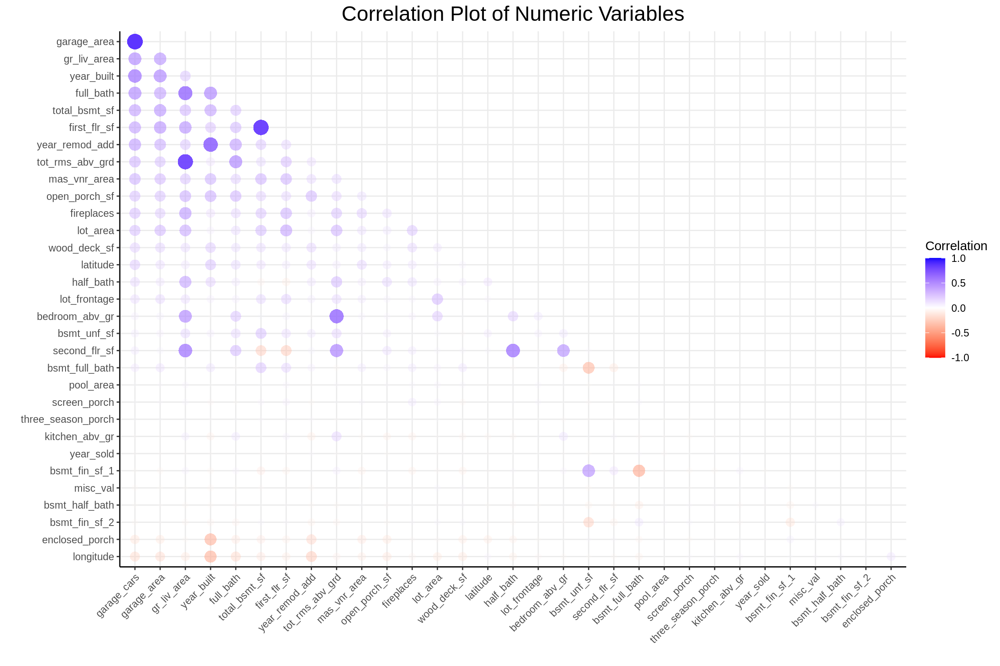
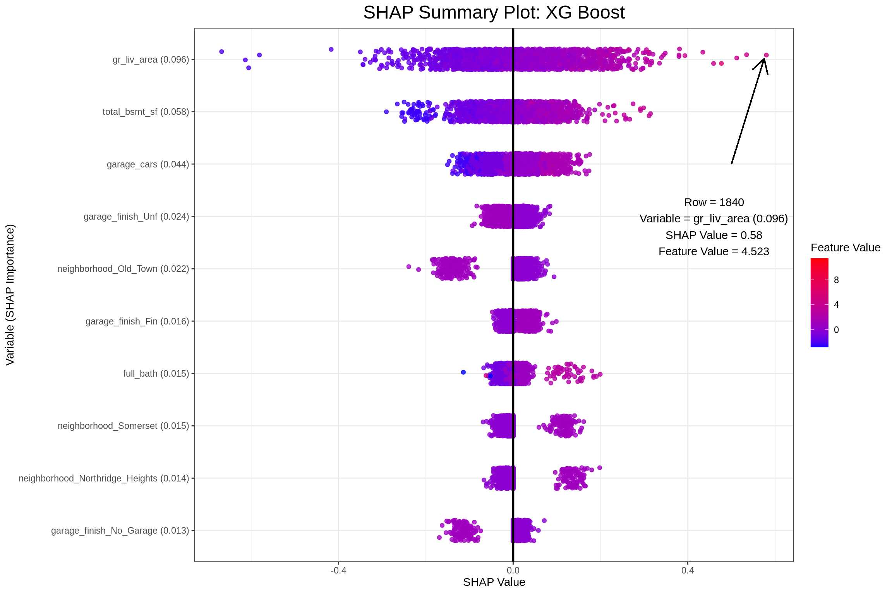
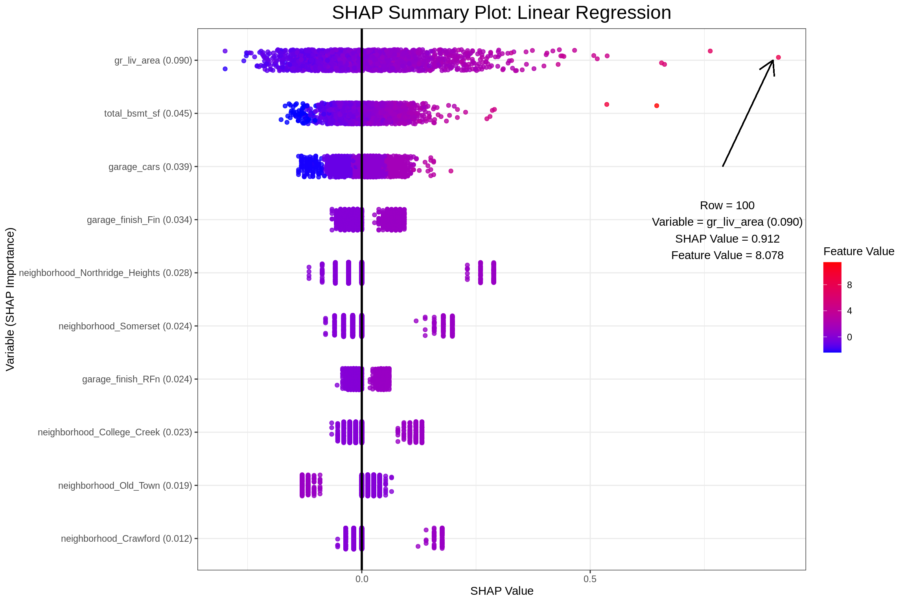
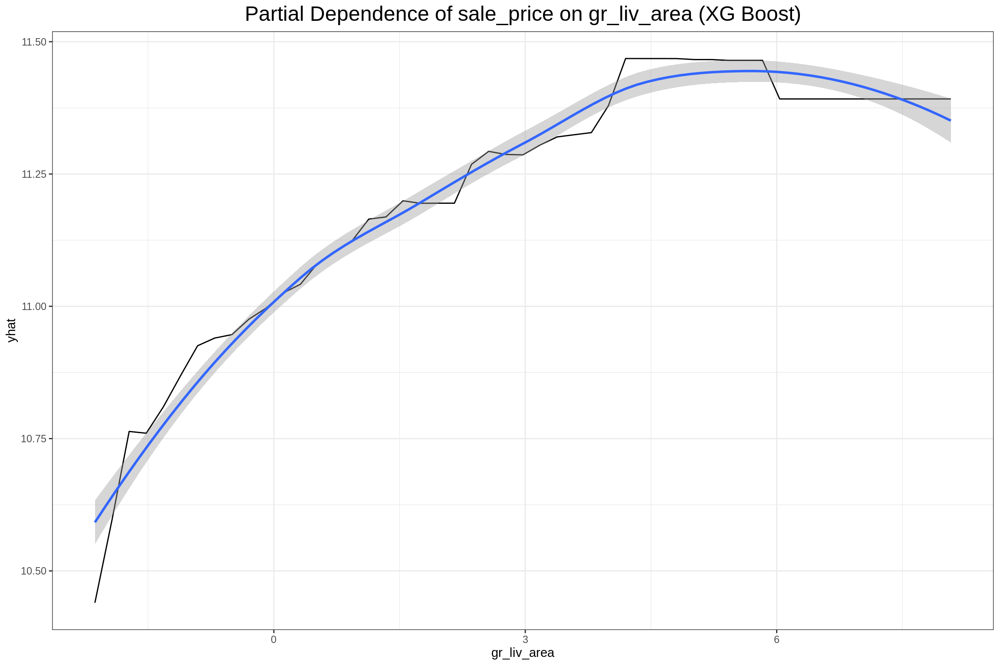
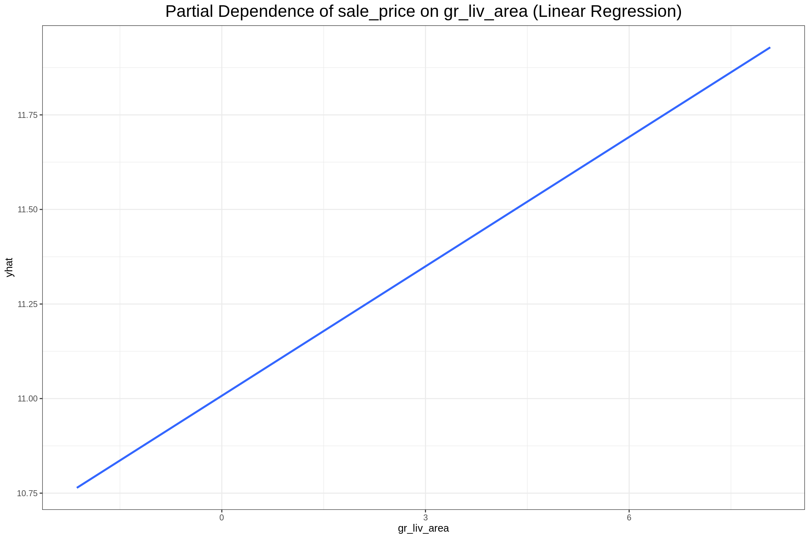
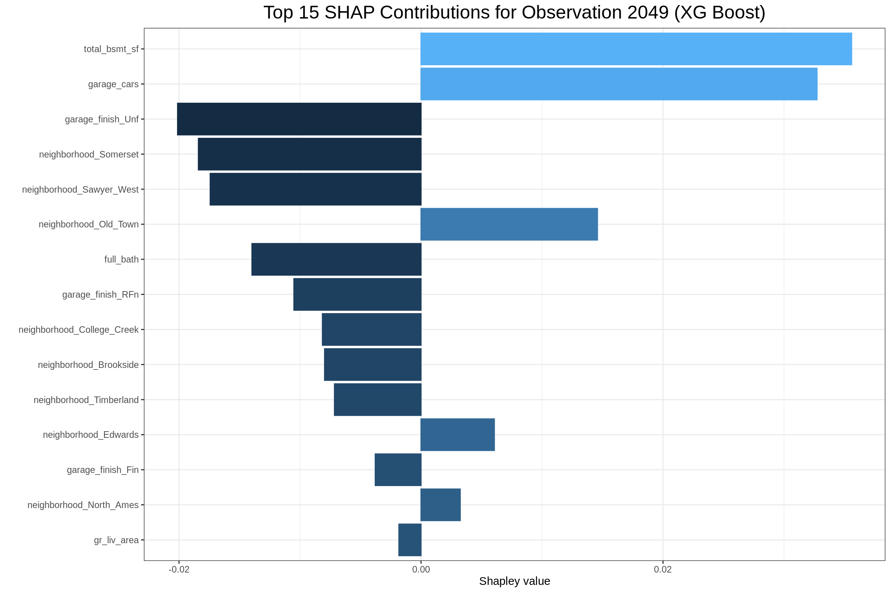
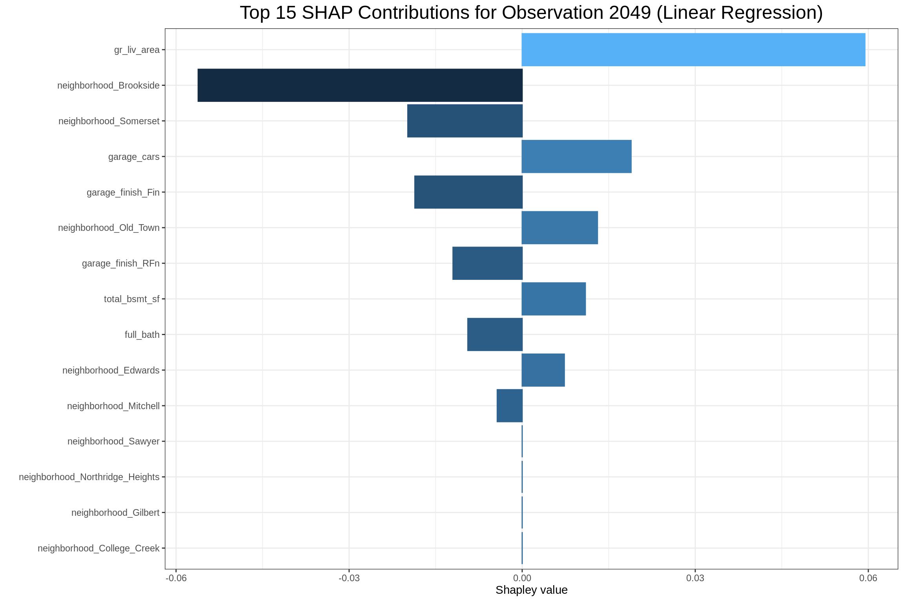

Recently I worked on a project which required explanation of ML algorithms more precisely than with precision (I’ve heard you should always open with a bad joke). Being fairly new to the world of ML, I wasn’t aware of many ways to do that, but in my research I found DALEX developed by MI2DataLab. I was impressed, surprised, and excited. I very quickly developed some code for my project and even built a modelStudio dashboard as a proof of concept. Some of the advantages of DALEX are that it…
Upon presenting my proof of concept, though, I learned about some other project requirements that highlighted two disadvantages of DALEX. The R package does not…
These disadvantages were enough to have me go back to the drawing board. I wondered if there were other ways to get the same types of visualizations and model break-downs through or from other R packages. I found…
Since I was using Shapley values as a basis on which to explain everything I used only fastshap and pdp, but found that vip would work well if I wanted to use another method for computing variable importance like permutation. I found it a bit challenging to use breakDown with Tidymodel objects, otherwise, it was pretty easy to work with.
I’m going to demonstrate how I used these packages to “open the black box” of ML algorithms. In the example below I’ll show how I did it using an XG Boost and a linear model algorithm since ‘lm’ is very standard and XG Boost can present some challenging data formatting requirements. I’ll be using the Ames Housing Data included in the modeldata package. I’m using this version rather than that from the AmesHousing package because the good folks at RStudio who work on Tidymodels did a great job of cleaning up the data a bit (thank you!) in their version and I didn’t want to spend a lot of time doing that for this demo. Also, I chose this data set because it has some things in common with the data that I used in the aforementioned project that prompted this work such as having mixed data types (discrete and numeric) in the explanatory variables, a large enough number of observations for training (and tuning) and testing a model, and some problems with multicollinearity (or redundancy) in the explanatory variables. As a quick aside, I’m also very grateful to the folks that work on the Tidyverse of packages; I use these in nearly every R session.
Prior to diving into the data, first I’ll ensure to have all required packages.
# Clear the workspace
rm(list = ls())
# Store a vector of packages names to install and load
pkg_list <- c(
"tidyverse", "tidymodels", "magrittr", "janitor", "car", "vip", "fastshap",
"pdp", "corrr", "xgboost", "doParallel", "future", "furrr"
)
# Install any packages that are not yet installed
invisible(
lapply(
pkg_list,
function(p) {
if (!p %in% installed.packages()[, "Package"]) {
install.packages(p, dependencies = TRUE, quiet = TRUE)
}
}
)
)
# Also install the 'recipeselectors' package from GitHub
if (!"recipeselectors" %in% installed.packages()[, "Package"]) {
if (!"devtools" %in% installed.packages()[, "Package"]) {
invisible(install.packages(devtools, dependencies = TRUE, quiet = TRUE))
}
invisible(devtools::install_github("stevenpawley/recipeselectors"))
}
# Load packages that will be used throughout the code
library(fastshap, quietly = TRUE)
library(tidyverse, quietly = TRUE)## ── Attaching packages ─────────────────────────────────────── tidyverse 1.3.1 ──## ✓ ggplot2 3.3.4 ✓ purrr 0.3.4
## ✓ tibble 3.1.2 ✓ dplyr 1.0.7
## ✓ tidyr 1.1.3 ✓ stringr 1.4.0
## ✓ readr 1.4.0 ✓ forcats 0.5.1## ── Conflicts ────────────────────────────────────────── tidyverse_conflicts() ──
## x dplyr::explain() masks fastshap::explain()
## x dplyr::filter() masks stats::filter()
## x dplyr::lag() masks stats::lag()library(tidymodels, quietly = TRUE)## Registered S3 method overwritten by 'tune':
## method from
## required_pkgs.model_spec parsnip## ── Attaching packages ────────────────────────────────────── tidymodels 0.1.3 ──## ✓ broom 0.7.7 ✓ rsample 0.1.0
## ✓ dials 0.0.9 ✓ tune 0.1.5
## ✓ infer 0.5.4 ✓ workflows 0.2.2
## ✓ modeldata 0.1.0 ✓ workflowsets 0.0.2
## ✓ parsnip 0.1.6 ✓ yardstick 0.0.8
## ✓ recipes 0.1.16## ── Conflicts ───────────────────────────────────────── tidymodels_conflicts() ──
## x scales::discard() masks purrr::discard()
## x dplyr::explain() masks fastshap::explain()
## x dplyr::filter() masks stats::filter()
## x recipes::fixed() masks stringr::fixed()
## x dplyr::lag() masks stats::lag()
## x yardstick::spec() masks readr::spec()
## x recipes::step() masks stats::step()
## • Use tidymodels_prefer() to resolve common conflicts.library(kableExtra) # Just for the Markdown document##
## Attaching package: 'kableExtra'## The following object is masked from 'package:dplyr':
##
## group_rowsNext I loaded a script containing some functions that I defined (available on GitHub).
source("./helper-functions/tidy-ml-evaluation-funs.R")At this point I was ready to start with data exploration.
First I loaded the data and made some small adjustments, for example, I learned in my tinkering that there are some unused levels in the “Neighborhood” variable.
# Load the Ames data set
data(ames)
# Convert month variable to a factor and set the largest category of each
# factor to that factor's base level (for contrast matrix for LM)
housing <- ames |>
janitor::clean_names() |>
mutate(
mo_sold = as_factor(mo_sold),
across(where(is.factor), ~ fct_drop(.x) |> fct_infreq())
)
neighborhoods <- table(ames$Neighborhood) |>
enframe(name = "Neighborhood", value = "Count") |>
arrange(Count) |>
slice(1:6)
hl_neigh_rows <- which(neighborhoods$Count == 0)
neighborhoods |>
kable(booktabs = TRUE) |>
kable_styling() |>
row_spec(hl_neigh_rows, bold = T, color = "black", background = "yellow")| Neighborhood | Count |
|---|---|
| Hayden_Lake | 0 |
| Landmark | 1 |
| Green_Hills | 2 |
| Greens | 8 |
| Blueste | 10 |
| Northpark_Villa | 23 |
Next I just wanted to check whether there were any missing values in the data (there shouldn’t be).
any(is.na(housing))## [1] FALSEThen I wanted to see how many categories there were in each discrete variable to determine whether there might be any near-zero variance issues. When there are too many categories in a discrete variable, that variable would not do a good job of grouping (how informative is a category of size 1?) and if there are too few variables relative to the observation count then it’s likely that a small number of categories will be too dominant and possibly mask the effects of other categories.
select(housing, -sale_price) |>
select_if(is.factor) |>
summarise(across(everything(), ~ n_distinct(.x, na.rm = TRUE))) |>
pivot_longer(
everything(),
names_to = "variable",
values_to = "num_categories"
) |>
ggplot(aes(x = num_categories, y = fct_reorder(variable, num_categories))) +
geom_bar(stat = "identity", width = 0.8) +
labs(
y = "Variable",
x = "Number of Categories",
title = "Number of Categories in Each Factor Variable"
) +
ml_eval_theme()
There are a few concerning variables, so next I’ll do a quick check for near-zero variance using the parameters from the recipes::step_nzv() function.
# Check for near-zero variance
uniqueCut <- select(housing, -sale_price) |>
select_if(is.factor) |>
pivot_longer(everything(), names_to = "variable", values_to = "category") |>
group_by(variable) |>
summarise(uniqueCut = (n_distinct(category) * 100) / n(), .groups = "drop")
freqCut <- select(housing, -sale_price) |>
select_if(is.factor) |>
pivot_longer(everything(), names_to = "variable", values_to = "category") |>
count(variable, category, name = "count") |>
group_by(variable) |>
slice_max(count, n = 2, with_ties = FALSE) |>
mutate(rank = c("first", "second")) |>
ungroup() |>
select(-category) |>
pivot_wider(names_from = rank, values_from = count) |>
mutate(freqCut = first / second)
housing_nzv <- left_join(freqCut, uniqueCut, by = "variable") |>
mutate(nzv = as.numeric(uniqueCut < 10 & freqCut > 19))
housing_nzv_counts <- housing_nzv |>
count(nzv)
hl_nzv_rows <- which(housing_nzv_counts$nzv == 1)
kable(slice(housing_nzv, 1:6), booktabs = TRUE) |> kable_styling()| variable | first | second | freqCut | uniqueCut | nzv |
|---|---|---|---|---|---|
| alley | 2732 | 120 | 22.766667 | 0.1023891 | 1 |
| bldg_type | 2425 | 233 | 10.407725 | 0.1706485 | 0 |
| bsmt_cond | 2616 | 122 | 21.442623 | 0.2047782 | 1 |
| bsmt_exposure | 1906 | 418 | 4.559809 | 0.1706485 | 0 |
| bsmt_fin_type_1 | 859 | 851 | 1.009401 | 0.2389078 | 0 |
| bsmt_fin_type_2 | 2499 | 106 | 23.575472 | 0.2389078 | 1 |
kable(housing_nzv_counts, booktabs = TRUE) |>
kable_styling() |>
row_spec(hl_nzv_rows, bold = T, color = "black", background = "yellow")| nzv | n |
|---|---|
| 0 | 28 |
| 1 | 13 |
Next I want to look at the distributions of numeric data with violin plots from ggplot2.
select(housing, where(is.numeric)) |>
pivot_longer(everything(), names_to = "variable", values_to = "value") |>
ggplot(aes(x = variable, y = value)) +
geom_violin(fill = "gray") +
facet_wrap(~ variable, scales = "free", ncol = 5) +
labs(
y = NULL,
x = NULL,
title = "Distributions of Numeric Variables"
) +
ml_eval_theme() +
theme(axis.text.x = element_blank(), axis.ticks.x = element_blank())
While it looks like some of the numeric variables are multimodal or have skewed distributions, the real concern is that sales_price, the target variable, looks a bit right skewed (as financial data often are). I’ll normalize the numeric explanatory variables in my recipe later and perform a Yeo-Johnson transformation on the target variable for modeling.
Now that I have an idea of what the variables look like individually, I’m going to see if there are any relationships that might suggest multicollinearity or redundancy. I’ll start with the discrete variables.
factor_names <- select(housing, -sale_price) |>
select_if(is.factor) |>
names()
chi_sq_dat <- crossing(var1 = factor_names, var2 = factor_names) |>
mutate(
chi_sq_results = map2(
var1,
var2,
~ select(housing, any_of(c(.x, .y))) |>
table() |>
chisq.test() |>
broom::tidy()
)
) |>
unnest(chi_sq_results) |>
select(var1, var2, p.value) |>
pivot_wider(names_from = var2, values_from = p.value) |>
column_to_rownames("var1")
chi_sq_dat[!upper.tri(chi_sq_dat)] <- NA
chi_sq_dat |>
rownames_to_column("var1") |>
pivot_longer(-var1, names_to = "var2", values_to = "p.value") |>
drop_na(p.value) |>
ggplot(aes(fct_rev(var2), var1, color = p.value)) +
geom_point(size = 3) +
scale_color_viridis_c(direction = -1) +
labs(title = "Chi-square Plot of Categorical Variables", color = "P-value") +
ml_eval_theme() +
theme(
axis.title = element_blank(),
axis.text.x = element_text(angle = 45, hjust = 1),
panel.border = element_blank(),
axis.line = element_line()
)
A low p-value from a chi-square test indicates non-independence between 2 variables and this plot shows that there seems to be quite a lot of interdependence among these categorical variables. Next I’ll look at the relationships among the numeric variables with a correlation plot.
select(housing, -sale_price) |>
select_if(is.numeric) |>
corrr::correlate(method = "spearman", use = "pairwise.complete.obs") |>
corrr::rearrange(absolute = FALSE) |>
corrr::shave() |>
corrr::rplot(colors = c("red", "white", "blue")) +
labs(title = "Correlation Plot of Numeric Variables", color = "Correlation") +
ml_eval_theme() +
theme(
axis.text.x = element_text(angle = 45, hjust = 1),
panel.border = element_blank(),
axis.line = element_line()
)##
## Correlation method: 'spearman'
## Missing treated using: 'pairwise.complete.obs'## Don't know how to automatically pick scale for object of type noquote. Defaulting to continuous.
There seems to be less of an interdependence problem among the numeric variables. To deal with this problem in both types of variables I’ll use the recipeselectors::step_mrmr() function step in my pre-processing recipe.
Now I’ll move on to preparing the data for modeling.
First I’ll split the data for training and testing and further split the training data into cross-validation folds.
# Set the random number seed
set.seed(485)
# Split the data
housing_split <- initial_split(housing, prop = 0.75)
housing_train <- training(housing_split)
housing_test <- testing(housing_split)
# Create the CV dataframe
housing_folds <- vfold_cv(housing_train, v = 10)Next I’ll write my pre-processing recipes; one for each type of model. The only difference between the two recipes is that in the linear model recipe I set one_hot = FALSE to keep the reference level out of the contrast matrix. The steps are as follows:
# XGBoost recipe
xgb_rec <- recipe(housing_train) |>
update_role(sale_price, new_role = "outcome") |>
update_role(-has_role("outcome"), new_role = "predictor") |>
step_nzv(all_predictors()) |>
step_normalize(all_numeric_predictors()) |>
step_YeoJohnson(all_outcomes()) |>
recipeselectors::step_select_mrmr(
all_predictors(),
outcome = "sale_price",
threshold = 0.9,
skip = TRUE
) |>
step_dummy(all_nominal_predictors(), one_hot = TRUE)
# Linear Model recipe
num_steps <- length(xgb_rec$steps)
lm_rec <- xgb_rec
lm_rec$steps[[num_steps]] <- update(lm_rec$steps[[num_steps]], one_hot = FALSE)Next I want to generate a tuning grid for the XGB model. To limit the number of features selected randomly at each node I’ll first get the number of features that will be in the data after the pre-processing recipe has been applied. I also set the range for the learning rate a bit arbitrarily because I found that the default range resulted in the model learning too quickly and not keeping enough information from early iterations.
# Get the number of features in the training data for XGB tuning grid
n_features <- bake(prep(xgb_rec), new_data = housing_train) |>
ncol() |>
magrittr::subtract(1) |>
sqrt()
# Create a tuning grid for XGB
set.seed(55)
xgb_grid <- grid_random(
mtry(c(1, floor(n_features))), # Range of number of features to try
trees(), # Range of number of trees
learn_rate(range = c(-7, 1)), # Learning rate
loss_reduction(),
size = 50
)Now I’ll create the workflow objects that I’ll use in model tuning and evaluation.
# Create model objects for both XGB and LM
xgb_mod <- boost_tree(
mtry = tune(),
trees = tune(),
learn_rate = tune(),
loss_reduction = tune(),
mode = "regression"
) |>
set_engine("xgboost")
lm_mod <- linear_reg(mode = "regression") |> set_engine("lm")
# Create workflow objects for tuning
xgb_wflow <- workflow() |> add_recipe(xgb_rec) |> add_model(xgb_mod)
lm_wflow <- workflow() |> add_recipe(lm_rec) |> add_model(lm_mod)Because model tuning can be quite computationally intensive (and time consuming) even for a small example like the one I’m working with, I first set up a parallel back end to run simple processes simultaneously. Some important things to note are that I had to ensure that the recipeselectors package was available to each processor and that I set the same random seed on each processor for reproducibility. Once that’s done, I tune the models.
# Register and set up the parallel backend
cl <- parallel::makePSOCKcluster(parallel::detectCores(logical = FALSE) - 1)
doParallel::registerDoParallel(cl)
parallel::clusterEvalQ(cl, library(recipeselectors))## [[1]]
## [1] "recipeselectors" "recipes" "dplyr" "stats"
## [5] "graphics" "grDevices" "utils" "datasets"
## [9] "methods" "base"
##
## [[2]]
## [1] "recipeselectors" "recipes" "dplyr" "stats"
## [5] "graphics" "grDevices" "utils" "datasets"
## [9] "methods" "base"
##
## [[3]]
## [1] "recipeselectors" "recipes" "dplyr" "stats"
## [5] "graphics" "grDevices" "utils" "datasets"
## [9] "methods" "base"parallel::clusterEvalQ(cl, set.seed(853))## [[1]]
## NULL
##
## [[2]]
## NULL
##
## [[3]]
## NULL# Tune both models
xgb_tune <- tune_grid(
xgb_wflow,
grid = xgb_grid,
resamples = housing_folds,
metrics = metric_set(rmse, rsq_trad)
)
lm_tune <- fit_resamples(
lm_wflow,
resamples = housing_folds,
metrics = metric_set(rmse, rsq_trad)
)I leave the parallel processing cluster because there are some processes ahead that will also require parallel processing.
Now that the model hyperparameters have been tuned (at least for XGB) I can pull the models that performed best from our cross-validation process.
# Get the best models from each tuning process
best_models <- list(xgb = xgb_tune, lm = lm_tune) |>
map(select_best, metric = "rmse")
# Collect tuning metrics for each tuning process
tune_metrics <- list(xgb = xgb_tune, lm = lm_tune) |>
map(collect_metrics)
# Fit the models with the best parameters to the entire training data set
final_wflows <- map2(
list(xgb = xgb_wflow, lm = lm_wflow),
best_models,
~ finalize_workflow(.x, .y) |> fit(data = housing_train)
)With the best performing models from cross-validation now fit to the entire training data set, I can evaluate these models against the test data.
# Evaluate each model with the test data and store 'last_fit' objects
set.seed(485)
final_wflow_evals <- map(
final_wflows,
last_fit,
split = housing_split,
metrics = metric_set(rmse, mae, mape, rsq_trad)
)Now I can see how each model performed on the test data.
# Generate a dataframe of model metrics to compare the two models
model_metrics <- final_wflow_evals |>
map2_df(
names(final_wflow_evals),
~ collect_metrics(.x) |>
select(.metric, .estimate) |>
pivot_wider(names_from = .metric, values_from = .estimate) |>
mutate(algorithm = .y) |>
relocate(algorithm)
)It looks like the XGB model outperformed the Linear Model on every metric, but not by very much. Both seem to have performed pretty well at predicting home sale prices. It’s important to keep in mind here that the data were transformed, which is why the RMSE and MAE are so small. Now let’s go ahead and open these “black boxes”.
As stated earlier, this part of the analysis will be based on SHAP values. This explanation from Christoph Molnar’s book Interpretable Machine Learning is a great primer on what SHAP values are and how they can help someone understand the effect of a given feature/variable on a prediction.
With that in mind, now that the models have been tuned, trained, and evaluated, I can generate SHAP values to understand what’s going on under the hood (kinda). Note that this is still being run in parallel until the end of this portion.
# Get matrices of training features for each model
training_features <- final_wflows %>%
map(~ pull_workflow_mold(.x) %>% pluck("predictors"))
# Initiate a multicore plan
future::plan("cluster", workers = cl)
# Get SHAP values
shap <- final_wflows %>%
furrr::future_map(
get_shap,
.progress = TRUE,
.options = furrr::furrr_options(seed = 44)
)
# Get SHAP variable importance features
var_imp <- shap %>%
map(get_shap_imp)
# Go back to sequential processing
future::plan(future::sequential)
# Close the connection to the cluster
parallel::stopCluster(cl)I now have my SHAP values and can begin to visualize a few different things. The first visualization will be a SHAP summary plot, which I also found in Christoph Molnar’s Interpretable Machine Learning. When I saw this plot I was amazed at how much information it actually contains once you grasp the dimensionality.
# Pull data from the outermost point on the SHAP summary plot
point_dat_xgb <- get_shap_summary(
var_imp$xgb,
shap$xgb,
training_features$xgb,
max_features = 1
) |>
slice_max(shap_value, with_ties = FALSE)
point_dat_lm <- get_shap_summary(
var_imp$lm,
shap$lm,
training_features$lm,
max_features = 1
) |>
slice_max(shap_value, with_ties = FALSE)
# Put the data from that point into a string object
point_annotation_xgb <- str_glue(
"Row = {point_dat_xgb$id}
Variable = {point_dat_xgb$variable}
SHAP Value = {round(point_dat_xgb$shap_value, 3)}
Feature Value = {round(point_dat_xgb$feature_value, 3)}"
)
point_annotation_lm <- str_glue(
"Row = {point_dat_lm$id}
Variable = {point_dat_lm$variable}
SHAP Value = {round(point_dat_lm$shap_value, 3)}
Feature Value = {round(point_dat_lm$feature_value, 3)}"
)
# Create SHAP summaries containing data frames and plots
shap_summary_plots <- list(
var_imp,
shap,
training_features
) |>
pmap(get_shap_summary, max_features = 10) %>%
map2(c("XG Boost", "Linear Regression"), plot_shap_summary)
total_bsmt_sf_pdp <- final_wflows |>
map2(c("XG Boost", "Linear Regression"), plot_pdp, pred_var = total_bsmt_sf)
# Generate the SHAP summary plot with an annotation for the outermost point
set.seed(23)
shap_summary_plots$xgb +
geom_segment(
aes(x = 0.5, xend = 0.575, y = 8, yend = 10.01),
color = "black",
arrow = arrow(length = unit(0.03, "npc"))
) +
annotate(
geom = "text",
x = 0.46,
y = 6.8, label = point_annotation_xgb,
hjust = "center"
)
set.seed(23)
shap_summary_plots$lm +
geom_segment(
aes(x = 0.79, xend = 0.9, y = 8, yend = 10),
color = "black",
arrow = arrow(length = unit(0.03, "npc"))
) +
annotate(
geom = "text",
x = 0.8,
y = 6.8, label = point_annotation_lm,
hjust = "center"
)
The first plot above shows that row 1840 has a positive SHAP value of 0.5800548 for the gr_liv_area (0.096) in the XGB model, which had an above average value of 4.5232897 in the training data. When considering all the observations collectively the feature value is ideally positively related with the SHAP value. Next I’ll look at partial dependence plots to show the effect that the gr_liv_area has on sale_price according to each model.
gr_liv_area_pdp <- final_wflows |>
map2(c("XG Boost", "Linear Regression"), plot_pdp, pred_var = gr_liv_area)
gr_liv_area_pdp$xgb
gr_liv_area_pdp$lm
According to both models the gr_liv_area variable positively effects the predicted sale price of a home in the training data, which seems consistent with general knowledge about home prices given that gr_liv_area is a measure of the above ground living area (more commonly known as “square footage”). It’s important to note, however, that, unlike the coefficient in a regression model, one should not make inferences from a partial dependency beyond the dimensions of the training data. A partial dependency plot is meant only to provide an overview on the broad relationship between an explanatory variable and the target variable.
Lastly, I can look at how each feature affects a particular observation with a contribution plot. I’ll consider the house observed in row 2049 of the training data set.
obs_2409_contrib <- shap |>
map2(
c("XG Boost", "Linear Regression"),
get_contributions,
rnum = 2049,
nfeat = 15
)
obs_2409_contrib$xgb$contrib_plot
obs_2409_contrib$lm$contrib_plot
The above XG Boost contribution plot shows that total_bsmt_sf had the largest positive effect on the predicted sale price of the sale in observation 2049 and having garage_finish_Unf (having an unfinished garage) had the largest negative effect. The Linear Regression contribution plot shows that gr_liv_area had the largest positive effect and neighborhood_Brookside had the largest negative effect on the predicted sale price. However, it’s interesting to note that garage_finish_Fin, the opposite of garage_finish_Unf, had a negative effect in the Linear Regression.
While these methods of looking into machine learning algorithms are not designed for inference, they do go a long way in helping to elucidate the relationships or patterns that machine learning algorithms find. They help answer the questions about why some predictions come out the way that they do, whether they make sense or not.